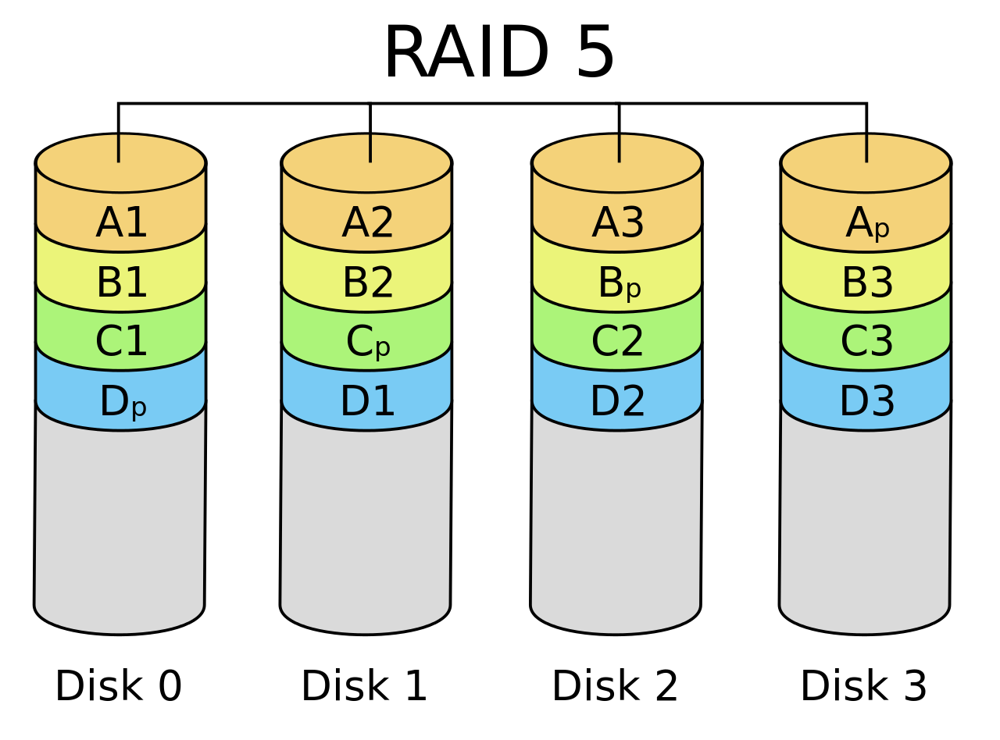
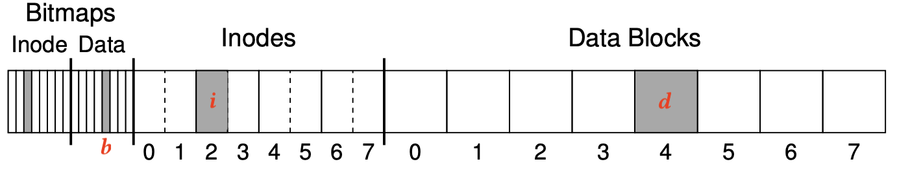

背景
文件系统 = 把设备抽象成目录树
- mount - 文件系统管理
- mkdir, rmkdir, link, symlink, unlink... - 目录管理
- open, mmap, read, write, lseek... - 文件管理
- 使用链表、索引、……实现
如何实现
本次课内容与目标
RAID: Redundant Array of Inexpensive Disks
- 把多块磁盘虚拟化成一块性能更好、更可靠的磁盘
崩溃一致性
- 如何在硬件可能崩溃的情况下保证文件系统 (数据结构) 的一致性
Redundant Array of Inexpensive Disks (RAID)
持久数据的可靠性
任何物理存储介质都有失效的可能
- 你依然希望在存储设备失效的时候能保持数据的完整
- 极小概率事件：战争爆发/三体人进攻地球/世界毁灭 😂
- 小概率事件：硬盘损坏
- 大量重复 = 必然发生
- 但我们还是希望系统能照常运转
- 大量重复 = 必然发生
增加持久数据可靠性的方法
- 教务处：物理备份
- 期末考试后会提交所有批阅的试卷、成绩表、成绩分布
- 假设教务系统崩溃 v.s. 教务处崩溃是独立事件
- 两个极小概率事件同时发生，那就认倒霉吧
- 服务器：数据备份
- 所有数据同时写入两块磁盘
- 每日或每周备份
- crontab (time-based job scheduler)
RAID: 存储设备的虚拟化
Redundant Array of Inexpensive (Independent) Disks (RAID)
- 把多个 (不可靠的) 磁盘虚拟成一块非常可靠的虚拟磁盘
类比我们见过的虚拟化
- 进程：把一个 CPU 分时虚拟成多个虚拟 CPU
- 虚存：把一份内存通过 MMU 虚拟成多个地址空间
- 文件：把一个存储设备虚拟成多个虚拟磁盘
RAID 的虚拟化是 “反向” 的
- (一个 → 多个) vs. (多个 → 一个)
RAID 的 Fault Model: Fail-Stop
磁盘可能在某个时刻忽然彻底无法访问 (数据好像完全消失)。
- 机械故障、芯片故障……
- 磁盘好像就 “忽然消失” 了
- 假设磁盘能报告这个问题 (如何报告？)
- L. Bairavasundaram, et al. An analysis of data corruption in the storage stack. In Proc. of FAST, 2008.
你还敢用这个硬盘做 {教务系统, 支付宝, 银行, …} 吗？
- 总有一天，一定有磁盘会坏掉的
- 坏事件一旦发生，就有数据会丢失
- 永远不丢失数据似乎是不可能的
- 我们还能构造可靠的 (单机) 存储系统吗？
当然可以！
假设我愿意在系统里多接入一块硬盘用于容灾
- 通过设备驱动程序抽象成 “一个磁盘” $V$ (例如 1TB)
- 实际由 $A$, $B$ 两块 1TB 的物理磁盘组成
镜像
- 实际由 $A$, $B$ 两块 1TB 的物理磁盘组成
- readb($V$, blk)
- 可以从 $A$ 或 $B$ 中的任意一个读取
- writeb($V$, blk)
- 将同样的数据写入 $A$, $B$ 的同一位置
假设内存带宽远高于磁盘带宽
- 1X write (浪费了 1/2 的总带宽)
- 2X sequential read (tricky)
- 2X random read (使用了 100% 的总带宽)
- 抵抗任意一块盘的损坏
RAID: Design Space
RAID (虚拟化) = 虚拟磁盘块到物理磁盘块的 “映射”。
RAID-0: 把多块盘 “交替拼接”
- $V_0 \to A_0$, $V_1 \to B_0$, $V_{2i} \to A_i$, $V_{2i+1} \to B_i$
- 完美扩展的高性能虚拟磁盘
- 100% 顺序/随机读写总带宽
- 但完全不能容错
RAID-1 (镜像)
- $V_0 \to (A_0, B_0)$
- 容忍一块盘 fail
RAID: Design Space (cont'd)
RAID: 允许 “多对多” 的映射 (一组映射称为 “条带”, stripe)
RAID-10
- $(V_0, V_1) \to (A_0, B_0, C_0, D_0)$
- $A_0 = B_0 = V_0$, $C_0 = D_0 = V_1$
另一种可能的方式
- $(V_0, V_1, V_2) \to (A_0, B_0, C_0, D_0)$
- “三块映射到四块”
RAID: Design Space (cont'd)
$(V_0, V_1, V_2) \to (A_0, B_0, C_0, D_0)$
- 不妨假设所有的条带 $V_i, A_i, B_i, C_i, D_i$ 都只有 1-bit
- 问题：
如何用 4 个 bit 存储 3-bit 信息，使得 4 个 bit 中的任何一个丢失，都能恢复出存储的 3-bit 的信息？ - 奇偶校验！
- 对于 bits $a_1, a_2, \ldots, a_n$
- 存储 $a_{n+1} = a_1 \oplus a_2 \oplus \ldots \oplus a_n$
- 移项得 $a_1 \oplus a_2 \oplus \ldots \oplus a_n \oplus a_{n+1} = 0$
- 任何一个 bit 丢失 (对应 $A,B,C,D$ 中某块硬盘不能启动)
- $a_i = a_1 \oplus \ldots \oplus a_{i-1} \oplus a_{i+1} \oplus \ldots \oplus a_n \oplus a_{n+1}$
- 存储 $a_{n+1} = a_1 \oplus a_2 \oplus \ldots \oplus a_n$
RAID-4: Parity Disk
专门留一块磁盘作为奇偶校验盘。
- $(V_0, V_1, V_2) \to (A_0, B_0, C_0, D_0)$
- $A_0 = V_0$, $B_0 = V_1$, $C_0 = V_2$
- $D_0 = V_0 \oplus V_1 \oplus V_2$ (奇偶校验)
性能分析
- sequential/random read: 3x (75% 总带宽)
- sequential write: 3x (75% 总带宽)
- random write (tricky)
- $D_0 = V_0 \oplus V_1 \oplus V_2$
- 写入任意 $V_0, V_1, V_2$ 都需要更新 $D_0$
- 更新 $V_0$ 需要 readb($\{A_0,D_0\})$, writeb($\{A_0,D_0\}$)
- 奇偶校验盘成为了瓶颈: 0.5x
RAID-5: Rotating Parity
“交错排列” parity block!

RAID-5: 性能分析
让每一块盘都有均等的机会存储 parity
- sequential read/write: 3x (75% 总带宽)
- random read (tricky)
- (read 足够大，所有磁盘都可以提供数据) 4x (100% 总带宽)
- random write (tricky)
- $D_0 = V_0 \oplus V_1 \oplus V_2$; 写入任意 $V_0, V_1, V_2$ 都需要更新 $D_0$
- 奇偶校验依然严重拖慢了随机写入
- 但至少 $n$ 块盘可以获得 $n/4$ 的随机写性能 (能够 scale)
RAID: 讨论

更快、更可靠、近乎免费的大容量磁盘
- 今天服务器的标准配置
RAID 的可靠性
- RAID 系统发生断电？
- 例子：RAID-1 镜像盘出现不一致的数据
- 检测到磁盘坏？
- 自动重组
崩溃一致性与崩溃恢复
另一种 Fault Model
磁盘并没有故障
- 但操作系统内核可能 crash，系统可能断电

文件系统：设备上的树结构
- 即便只是 append 一个字节，也涉及多处磁盘的修改
- inode, inode-bitmap, block-bitmap
- 不同的 block，因此无法同时完成
崩溃一致性 (Crash Consistency)
Crash Consistency: Move the file system from one consistent state (e.g., before the file got appended to) to another atomically (e.g., after the inode, bitmap, and new data block have been written to disk).
导致崩溃一致性的原因
- RAID: write($V_0$) $\to$ write($A_0$) write($B_0$)
- ext2 (文件追加写入一块): write(inode); write(bitmap); write(data);
- 但是存储设备的多次写入没有原子性保证 😂
- 甚至为了性能，没有顺序保证 (并发编程：从入门到放弃)
原子性的丧失：后果
考虑追加写入一个数据块，磁盘上数据结构的更新

- b: bitmap; i: inode; d: data
- $\{b\}$ - dead block
- $\{i\}$ - dangling pointer
- $\{d\}$ - random writes (没有一致性问题)
- $\{b,i\}$ - incorrect data
- $\{i,d\}$ - dangling pointer
- $\{b,d\}$ - dead block
崩溃恢复: FSCK
File System Checking (FSCK)
根据磁盘上已有的信息，恢复出 “最可能” 的数据结构
- 检查 inode 标记的数据块是否 bitmap 都标记为 “1”
- 检查 inode 数据是否 “看起来合法”，否则删除
- 检查是否存在 dangling link
- 没有链接的 inode 被移到 lost+found 目录中
刚才的哪些情况可以由 fsck 修复？
- $\{b,i\}$ - incorrect data
- $\{i,d\}$ - dangling pointer
- $\{b,d\}$ - dead block
FSCK 的难题
在发生不一致时，“到底什么是对的”？

- H. S. Gunawi, et al. SQCK: A declarative file system checker. In Proc. of OSDI, 2008.
如果 fsck 的时候发生崩溃 😂
fsck 也是程序，fsck 也要访问文件系统
- 如果 fsck 时发生崩溃，文件系统可能进入彻底无法恢复的状态！
- O. R. Gatla, et al. Towards robust file system checkers. In Proc. of FAST, 2018.
- fsck 更多用于磁盘发生部分损坏时的数据抢救
针对 crash，我们需要更可靠的方法我们需要一个更可靠的方法
- 文件系统不一致的根本原因是
存储设备无法提供多次写入的原子性
崩溃恢复: Journaling
日志 (Journaling)
能否在磁盘 API 上实现可靠的 multi-write 原子性？
- readb (读一块), writeb (写一块), sync (等待所有过去的写入落盘)
数据结构有两种实现方法
- 存储实际
数据结构 - 文件系统的 “直观” 表示
- crash unsafe
- append-only 记录所有
历史操作 - “重做” 所有操作得到数据结构的当前状态
- 容易实现崩溃一致性
实现 Atomic Append
- 定位到 journal 的末尾 (使用 readb)
- 在 journal 末尾 append TXBegin，并记录所有操作
- 记录文件系统操作 v.s. 记录磁盘块操作
- sync，等待数据落盘
- append TXEnd
- sync，等待 TXEnd 落盘
- sync 返回后持久化完成 (“committed”)
实现 Crash Consistency
小孩子才做选择，我文件系统全都要！
主要维护文件系统的结构，但预留一定的 journal 区域
- journal commit 后，可以将 journal 中的操作直接应用到文件系统上 (checkpoint)
- redo logging (write-ahead logging): journal 记录 “做什么”
- 先写 journal，再写文件系统
- 崩溃恢复时，重做 journal 中的操作
- undo logging: 记录如何 “撤销” 操作 (即块中的数值)
- 先写文件系统，再写 journal
- 崩溃恢复时，撤销文件系统中的
- redo logging (write-ahead logging): journal 记录 “做什么”
Journaling: 优化
现在磁盘需要写入双份的数据
- 批处理 (xv6; jbd)
- 多次系统调用的 Tx 合并成一个，减少 log 的大小
- jbd: 定期 write back
- Checksum (ext4)
- 不再标记 TxBegin/TxEnd
- 直接标记 Tx 的长度和 checksum
- Metadata journaling (ext4 default)
- 数据占磁盘写入的绝大部分
- 只对 inode 和 bitmap 做 journaling 可以提高性能
- 保证文件系统的目录结构是一致的；但数据可能丢失
- 数据占磁盘写入的绝大部分
Metadata Journaling
从应用视角来看，文件系统的行为可能很怪异
- 各类系统软件 (git, sqlite, gdbm, ...) 不幸中招
- T. S. Pillai. All file systems are not created equal: On the complexity of crafting crash-consistent applications. In Proc. of OSDI, 2014.
- (os-workbench 里的小秘密)
- 我们的工作: GNU coreutils, gmake, gzip, ... 也有问题
- Y. Jiang, et al. Crash consistency validation made easy. In Proc. of FSE, 2016.
为应用程序提供 Multi-Write 的一致性？
TxOS: 提供三个新的系统调用
- xbegin, xend, xabort
- 实现多个系统调用的原子性
- 应用场景：数据更新、软件更新、check-use……
- D. E. Porter, et al. Operating systems transactions. In Proc. of SOSP, 2009.
总结
总结
本次课内容与目标
- 持久数据的可靠性
- fail-stop: RAID
- 随机损坏：fsck
- 崩溃：journaling
Takeaway messages
- 把磁盘理解成 “数据结构”